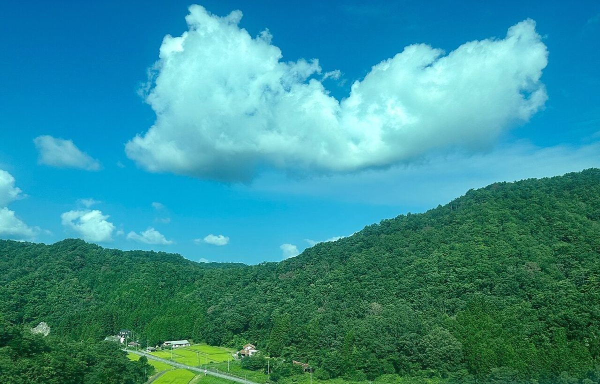

お店について
お店の紹介文・こだわりなどは準備中です。

サイトのコンセプト(制作側の案)
これは制作側が考えた案で、お店の考えを決めつけるものではありません。
- 01広がる空と草原のような、ゆったりした余白のデザイン
- 02初めての方にも見やすい、電話とInstagramへの入り口
- 03準備が整った情報から、少しずつ増やせる作り




お店の紹介項目
- こだわり
- 準備中(お問い合わせください)
- スタッフ
- 準備中(お問い合わせください)
- 席・設備
- 準備中(お問い合わせください)
お店の紹介文・こだわりなどは準備中です。
これは制作側が考えた案で、お店の考えを決めつけるものではありません。
